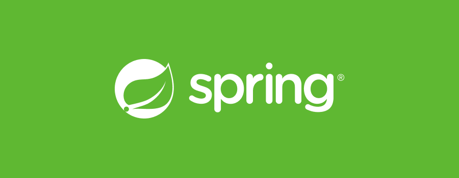

<!DOCTYPE html><html lang="kr"><head><meta charSet="utf-8"/><meta name="viewport" content="width=device-width, initial-scale=1"/><link rel="preload" href="/_next/static/media/a15f2fce4b98b461-s.p.woff2" as="font" crossorigin="" type="font/woff2"/><link rel="preload" as="image" href="/images/logo.svg"/><link rel="preload" as="image" href="./springboot-jpa-generated-value.png"/><link rel="stylesheet" href="/_next/static/css/36b495b034574090.css" data-precedence="next"/><link rel="stylesheet" href="/_next/static/css/00092d5ad1b87658.css" data-precedence="next"/><link rel="stylesheet" href="/_next/static/css/b2a4095017a7d650.css" data-precedence="next"/><link rel="stylesheet" href="/_next/static/css/06840273a2517f9a.css" data-precedence="next"/><link rel="preload" href="/_next/static/chunks/webpack-2526164fa4ea5cd6.js" as="script" fetchPriority="low"/><script src="/_next/static/chunks/fd9d1056-e03809968e9a6023.js" async=""></script><script src="/_next/static/chunks/864-832b9c0353241bb6.js" async=""></script><script src="/_next/static/chunks/main-app-33a23439339f035f.js" async=""></script><script async="" src="https://pagead2.googlesyndication.com/pagead/js/adsbygoogle.js?client=ca-pub-4998422659731294" crossorigin="anonymous"></script><script async="" custom-element="amp-ad" src="https://cdn.ampproject.org/v0/amp-ad-0.1.js"></script><meta name="google-site-verification" content="bbZ2jHC5uGJy6gqrZ1mX7JzvXjvvvm4fsDuCMrmYhGw"/><title>[SpringBoot] JPA 기본키 매핑 @GeneratedValue 종류와 사용 - Hibernation IT</title><meta name="description" content="JPA를 사용할 때, 데이터베이스의 테이블과 엔티티를 맵핑할 때, Key로 사용할 필드 위에 `@Id` 어노테이션을 사용하여 테이블의 Primary Key와 연..."/><meta property="og:title" content="[SpringBoot] JPA 기본키 매핑 @GeneratedValue 종류와 사용 - Hibernation IT"/><meta property="og:description" content="JPA를 사용할 때, 데이터베이스의 테이블과 엔티티를 맵핑할 때, Key로 사용할 필드 위에 `@Id` 어노테이션을 사용하여 테이블의 Primary Key와 연..."/><meta property="og:image" content="https://hibernationit.github.io/blog/springboot-jpa-generated-value/springboot-jpa-generated-value.png"/><meta name="twitter:card" content="summary_large_image"/><meta name="twitter:title" content="[SpringBoot] JPA 기본키 매핑 @GeneratedValue 종류와 사용 - Hibernation IT"/><meta name="twitter:description" content="JPA를 사용할 때, 데이터베이스의 테이블과 엔티티를 맵핑할 때, Key로 사용할 필드 위에 `@Id` 어노테이션을 사용하여 테이블의 Primary Key와 연..."/><meta name="twitter:image" content="https://hibernationit.github.io/blog/springboot-jpa-generated-value/springboot-jpa-generated-value.png"/><link rel="icon" href="/favicon.ico" type="image/x-icon" sizes="32x32"/><meta name="next-size-adjust"/><script src="/_next/static/chunks/polyfills-c67a75d1b6f99dc8.js" noModule=""></script></head><body class="__className_9dff5b"><main><header class="header_header__v3u3I"><a href="/"></a><ul><li><a href="/">Home</a></li><li><a href="/project/">Project</a></li><li><a href="/icon/">Icon</a></li><li><a href="/blog/">Blog</a></li><li><a href="/illust/">Illust</a></li><li><a href="/about/">About</a></li></ul></header><main class="page_main__a5wrv"><section class="page_header__nUMbM"><h3 class="page_dateBox__n4Pg_">2023년 12월 03일</h3><div class="page_title__rfBcm"><h1>[SpringBoot] JPA 기본키 매핑 @GeneratedValue 종류와 사용</h1></div><div class="page_chips__hoyVa"><div class="page_tag__F_8df">Backend</div><div class="page_tag__F_8df">SpringBoot</div><div class="page_tag__F_8df">Java</div><div class="page_tag__F_8df">Programing</div></div></section><section class="adBox_adbox__V7Zv9"><ins class="adsbygoogle" style="display:block" data-ad-client="ca-pub-4998422659731294" data-ad-slot="6878857551" data-ad-format="auto" data-full-width-responsive="true"></ins></section><section class="content_content__IJfBU"><p>JPA를 사용할 때, 데이터베이스의 테이블과 엔티티를 맵핑할 때, Key로 사용할 필드 위에 <code class="code_code__1f5fv">@Id</code> 어노테이션을 사용하여 테이블의 Primary Key와 연결할 수 있다.</p>
<p>하지만 이렇게 만든 Primary Key는 데이터베이스에서 DML을 사용하여 값을 넣을 때 처럼 꼭 키에도 값을 넣어줘야 한다.</p>
<p>이런 불편함을 해결하기 위해 데이터베이스는 시퀀스(Sequence)를 만들어서 사용하는데, <code class="code_code__1f5fv">@GeneratedValue</code>를 사용하면 JPA에서 시퀀스를 만들거나 시퀀스와 같은 기능을 구현할 수 있다.</p>
<p>JPA에서는 시퀀스와 같은 기능을 구현하기 위한 방법으로 대략 4가지를 지원하는데, 이를 하나하나 알아볼 시간을 가질 것이다.</p>
<h1>GenerationType.AUTO 옵션</h1>
<hr/>
<p><code class="code_code__1f5fv">Hibernate.dialect</code>에 <strong>설정된 DB 종류</strong>에 따라 자동으로 <code class="code_code__1f5fv">IDNTITY</code>, <code class="code_code__1f5fv">SEQUENCE</code>, <code class="code_code__1f5fv">TABLE</code> 중 하나로 선택하여준다.</p>
<pre><pre><code class="code_codeBox___leK0 java">@Id @GeneratedValue(strategy = GenergationType.AUTO)
private Long id;
</code></pre></pre>
<p>말 그대로 자동으로 선택해주기 때문에 어떤 방식을 선택할지는 모르기 때문에 주의하여 사용해야한다.</p>
<h1>GenerationType.IDENTITY 옵션</h1>
<hr/>
<pre><pre><code class="code_codeBox___leK0 java">@Id @GeneratedValue(strategy = GenergationType.IDENTITY)
private Long id;
</code></pre></pre>
<p><code class="code_code__1f5fv">IDENTITY</code> 방식은 기본 키 생성을 데이터베이스에 위임하는 방식이다.</p>
<p>데이터베이스에서 테이블을 생성할 때 Primary Key에 <code class="code_code__1f5fv">AUTO_INCREMENT</code> 속성을 추가하여 자동으로 증가시키는 기능을 사용하는 것이다.</p>
<h1>GenerationType.SEQUENCE 옵션</h1>
<hr/>
<pre><pre><code class="code_codeBox___leK0 java">@Entity
@SequenceGenerator(
	name = “ENTITY_SEQ_GENERATOR&quot;,
	sequenceName = “ENTITY_SEQ&quot;,
	initialValue = 1,
	allocationSize = 50
)
public class EntityName {

	@Id @GeneratedValue(strategy = GenergationType.SEQUENCE)
	private Long id;

}
</code></pre></pre>
<p><code class="code_code__1f5fv">SEQUENCE</code> 방식은 Database에서 <code class="code_code__1f5fv">AUTO_INCREMENT</code>를 사용하는 것이 아닌 <code class="code_code__1f5fv">Sequence</code>를 생성하여 사용하는 방식이다.</p>
<p>이렇게만 본다면 방식의 차이일 뿐, <code class="code_code__1f5fv">IDENTITY</code>와 동일하게 데이터베이스에 기본 키 생성을 위임하는 것인데, 큰 차이가 있다면 JPA의 로직이 다르다.</p>
<h2>SEQUENCE와 IDENTITY 방식 차이</h2>
<p><code class="code_code__1f5fv">SEQUENCE</code> 방식은 엔티티 저장을 위해 <code class="code_code__1f5fv">EntityManager</code>의 <code class="code_code__1f5fv">persist()</code> 함수가 실행되기 전에 데이터베이스 시퀀스를 조회하여 식별자를 먼저 조회하고 조회한 식별자를 엔티티에 할당한 후 영속성 컨텍스트에 저장한다.</p>
<p>이후 트랜잭션 커밋 시점에 엔티티를 데이터베이스에 저장하는 방식이다.</p>
<p><code class="code_code__1f5fv">IDENTITY</code> 방식은 <code class="code_code__1f5fv">EntityManager</code>의 <code class="code_code__1f5fv">persist()</code> 함수로 객체를 영속화 시키는 시점에 바로 insert 쿼리가 DB로 전송되고 거기서 받은 식별자 값을 엔티티에 할당한 후 영속성 컨텍스트에 저장한다.</p>
<p>위와 같이 데이터베이스에 저장하는 시점과 방식이 다르다.</p>
<h1>GenerationType.TABLE 옵션</h1>
<hr/>
<pre><pre><code class="code_codeBox___leK0 java">@Entity
@SequenceGenerator(
	name = “ENTITY_SEQ_GENERATOR&quot;,
	table = “SEQUENCES_TBL&quot;,
	pkColumnValue = &quot;ENTITY_SEQ&quot;,
	allocationSize = 50
)
public class EntityName {

	@Id @GeneratedValue(strategy = GenergationType.TABLE)
	private Long id;

}
</code></pre></pre>
<p>이는 키 생성 전용 테이블을 생성하여 데이터베이스 시퀀스 역할을 하는 것이다.</p>
<p>모든 데이터베이스에서 사용할 수 있으나, 성능적으로 다른 방식에 비해 손해가 있기 때문에 많이 사용하지 않는 편이 좋다.</p>
<h2>마치며</h2>
<p>이렇게 JPA를 사용할 때 거의 필수적으로 사용하는 <code class="code_code__1f5fv">@GeneratedValue</code> 의 방식 4가지에 대해 알아보았다.</p>
<p>데이터베이스 종류에 따라 지원하지 않는 종류가 있을 수 있으니, 사용시에는 데이터베이스가 <code class="code_code__1f5fv">AUTO_INCREMENT</code>를 지원하는지, <code class="code_code__1f5fv">Sequence</code>를 지원하는지 잘 확인한 후에 사용해야한다.</p></section><section class="adBox_adbox__V7Zv9"><ins class="adsbygoogle" style="display:block" data-ad-client="ca-pub-4998422659731294" data-ad-slot="6878857551" data-ad-format="auto" data-full-width-responsive="true"></ins></section><section class="utterances_content__ybnoM"><h1>댓글</h1></section></main></main><script src="/_next/static/chunks/webpack-2526164fa4ea5cd6.js" async=""></script><script>(self.__next_f=self.__next_f||[]).push([0])</script><script>self.__next_f.push([1,"1:HL[\"/_next/static/media/a15f2fce4b98b461-s.p.woff2\",\"font\",{\"crossOrigin\":\"\",\"type\":\"font/woff2\"}]\n2:HL[\"/_next/static/css/36b495b034574090.css\",\"style\"]\n3:HL[\"/_next/static/css/00092d5ad1b87658.css\",\"style\"]\n0:\"$L4\"\n"])</script><script>self.__next_f.push([1,"5:HL[\"/_next/static/css/b2a4095017a7d650.css\",\"style\"]\n6:HL[\"/_next/static/css/06840273a2517f9a.css\",\"style\"]\n"])</script><script>self.__next_f.push([1,"7:I{\"id\":6054,\"chunks\":[\"272:static/chunks/webpack-2526164fa4ea5cd6.js\",\"971:static/chunks/fd9d1056-e03809968e9a6023.js\",\"864:static/chunks/864-832b9c0353241bb6.js\"],\"name\":\"\",\"async\":false}\n9:I{\"id\":1729,\"chunks\":[\"272:static/chunks/webpack-2526164fa4ea5cd6.js\",\"971:static/chunks/fd9d1056-e03809968e9a6023.js\",\"864:static/chunks/864-832b9c0353241bb6.js\"],\"name\":\"\",\"async\":false}\na:I{\"id\":1443,\"chunks\":[\"272:static/chunks/webpack-2526164fa4ea5cd6.js\",\"971:static/chunks/fd9d1056-e03809968e9a6023.js\",\"864:stat"])</script><script>self.__next_f.push([1,"ic/chunks/864-832b9c0353241bb6.js\"],\"name\":\"\",\"async\":false}\nb:I{\"id\":8639,\"chunks\":[\"272:static/chunks/webpack-2526164fa4ea5cd6.js\",\"971:static/chunks/fd9d1056-e03809968e9a6023.js\",\"864:static/chunks/864-832b9c0353241bb6.js\"],\"name\":\"\",\"async\":false}\nc:I{\"id\":4724,\"chunks\":[\"724:static/chunks/724-450a7956623f13ea.js\",\"768:static/chunks/app/blog/layout-4dc1a42ae9ec178a.js\"],\"name\":\"\",\"async\":false}\ne:I{\"id\":8361,\"chunks\":[\"679:static/chunks/679-69e6abd40567a4e3.js\",\"817:static/chunks/app/(page)/blog/[page]/"])</script><script>self.__next_f.push([1,"page-1fdfc077c6bb2600.js\"],\"name\":\"\",\"async\":false}\nf:I{\"id\":9719,\"chunks\":[\"679:static/chunks/679-69e6abd40567a4e3.js\",\"817:static/chunks/app/(page)/blog/[page]/page-1fdfc077c6bb2600.js\"],\"name\":\"\",\"async\":false}\n10:I{\"id\":2292,\"chunks\":[\"679:static/chunks/679-69e6abd40567a4e3.js\",\"817:static/chunks/app/(page)/blog/[page]/page-1fdfc077c6bb2600.js\"],\"name\":\"\",\"async\":false}\n"])</script><script>self.__next_f.push([1,"4:[[[\"$\",\"link\",\"0\",{\"rel\":\"stylesheet\",\"href\":\"/_next/static/css/36b495b034574090.css\",\"precedence\":\"next\"}],[\"$\",\"link\",\"1\",{\"rel\":\"stylesheet\",\"href\":\"/_next/static/css/00092d5ad1b87658.css\",\"precedence\":\"next\"}]],[\"$\",\"$L7\",null,{\"buildId\":\"58ZATPBHlOju-LYeAXQ_7\",\"assetPrefix\":\"\",\"initialCanonicalUrl\":\"/blog/springboot-jpa-generated-value/\",\"initialTree\":[\"\",{\"children\":[\"(page)\",{\"children\":[\"blog\",{\"children\":[[\"page\",\"springboot-jpa-generated-value\",\"d\"],{\"children\":[\"__PAGE__?{\\\"page\\\":\\\"springboot-jpa-generated-value\\\"}\",{}]}]}]}]},\"$undefined\",\"$undefined\",true],\"initialHead\":[false,\"$L8\"],\"globalErrorComponent\":\"$9\",\"children\":[null,[\"$\",\"html\",null,{\"lang\":\"kr\",\"children\":[[\"$\",\"head\",null,{\"children\":[[\"$\",\"script\",null,{\"async\":true,\"src\":\"https://pagead2.googlesyndication.com/pagead/js/adsbygoogle.js?client=ca-pub-4998422659731294\",\"crossOrigin\":\"anonymous\"}],[\"$\",\"script\",null,{\"async\":true,\"custom-element\":\"amp-ad\",\"src\":\"https://cdn.ampproject.org/v0/amp-ad-0.1.js\"}],[\"$\",\"meta\",null,{\"name\":\"google-site-verification\",\"content\":\"bbZ2jHC5uGJy6gqrZ1mX7JzvXjvvvm4fsDuCMrmYhGw\"}]]}],[\"$\",\"body\",null,{\"className\":\"__className_9dff5b\",\"children\":[\"$\",\"$La\",null,{\"parallelRouterKey\":\"children\",\"segmentPath\":[\"children\"],\"loading\":\"$undefined\",\"loadingStyles\":\"$undefined\",\"hasLoading\":false,\"error\":\"$undefined\",\"errorStyles\":\"$undefined\",\"template\":[\"$\",\"$Lb\",null,{}],\"templateStyles\":\"$undefined\",\"notFound\":[\"$\",\"main\",null,{\"className\":\"not-found_main__n9Ud9\",\"children\":[\"$\",\"section\",null,{\"className\":\"not-found_content__krn5k\",\"children\":[[\"$\",\"img\",null,{\"src\":\"/images/nodata.svg\",\"alt\":\"nodata\"}],[\"$\",\"h1\",null,{\"children\":\"404\"}],[\"$\",\"p\",null,{\"children\":\"페이지를 찾을 수 없어요!\"}],[\"$\",\"$Lc\",null,{\"href\":\"/\",\"children\":\"홈으로 돌아가기\"}]]}]}],\"notFoundStyles\":[[\"$\",\"link\",\"0\",{\"rel\":\"stylesheet\",\"href\":\"/_next/static/css/20747a49c70fc5b3.css\",\"precedence\":\"next\"}]],\"childProp\":{\"current\":[null,[\"$\",\"main\",null,{\"children\":[[\"$\",\"header\",null,{\"className\":\"header_header__v3u3I\",\"children\":[[\"$\",\"$Lc\",null,{\"href\":\"/\",\"children\":[\"$\",\"img\",null,{\"src\":\"/images/logo.svg\",\"alt\":\"logo\"}]}],[\"$\",\"ul\",null,{\"children\":[[\"$\",\"li\",\"0\",{\"children\":[\"$\",\"$Lc\",null,{\"className\":\"$undefined\",\"href\":\"/\",\"children\":\"Home\"}]}],[\"$\",\"li\",\"1\",{\"children\":[\"$\",\"$Lc\",null,{\"className\":\"$undefined\",\"href\":\"/project\",\"children\":\"Project\"}]}],[\"$\",\"li\",\"2\",{\"children\":[\"$\",\"$Lc\",null,{\"className\":\"$undefined\",\"href\":\"/icon\",\"children\":\"Icon\"}]}],[\"$\",\"li\",\"3\",{\"children\":[\"$\",\"$Lc\",null,{\"className\":\"$undefined\",\"href\":\"/blog\",\"children\":\"Blog\"}]}],[\"$\",\"li\",\"4\",{\"children\":[\"$\",\"$Lc\",null,{\"className\":\"$undefined\",\"href\":\"/illust\",\"children\":\"Illust\"}]}],[\"$\",\"li\",\"5\",{\"children\":[\"$\",\"$Lc\",null,{\"className\":\"$undefined\",\"href\":\"/about\",\"children\":\"About\"}]}]]}]]}],[\"$\",\"$La\",null,{\"parallelRouterKey\":\"children\",\"segmentPath\":[\"children\",\"(page)\",\"children\"],\"loading\":\"$undefined\",\"loadingStyles\":\"$undefined\",\"hasLoading\":false,\"error\":\"$undefined\",\"errorStyles\":\"$undefined\",\"template\":[\"$\",\"$Lb\",null,{}],\"templateStyles\":\"$undefined\",\"notFound\":\"$undefined\",\"notFoundStyles\":\"$undefined\",\"childProp\":{\"current\":[\"$\",\"$La\",null,{\"parallelRouterKey\":\"children\",\"segmentPath\":[\"children\",\"(page)\",\"children\",\"blog\",\"children\"],\"loading\":\"$undefined\",\"loadingStyles\":\"$undefined\",\"hasLoading\":false,\"error\":\"$undefined\",\"errorStyles\":\"$undefined\",\"template\":[\"$\",\"$Lb\",null,{}],\"templateStyles\":\"$undefined\",\"notFound\":\"$undefined\",\"notFoundStyles\":\"$undefined\",\"childProp\":{\"current\":[\"$\",\"$La\",null,{\"parallelRouterKey\":\"children\",\"segmentPath\":[\"children\",\"(page)\",\"children\",\"blog\",\"children\",[\"page\",\"springboot-jpa-generated-value\",\"d\"],\"children\"],\"loading\":\"$undefined\",\"loadingStyles\":\"$undefined\",\"hasLoading\":false,\"error\":\"$undefined\",\"errorStyles\":\"$undefined\",\"template\":[\"$\",\"$Lb\",null,{}],\"templateStyles\":\"$undefined\",\"notFound\":\"$undefined\",\"notFoundStyles\":\"$undefined\",\"childProp\":{\"current\":[\"$Ld\",[\"$\",\"main\",null,{\"className\":\"page_main__a5wrv\",\"children\":[[\"$\",\"section\",null,{\"className\":\"page_header__nUMbM\",\"children\":[[\"$\",\"img\",null,{\"className\":\"page_titleImg__oHqJB\",\"src\":\"./springboot-jpa-generated-value.png\",\"alt\":\"springboot-jpa-generated-value.png\"}],[\"$\",\"h3\",null,{\"className\":\"page_dateBox__n4Pg_\",\"children\":\"2023년 12월 03일\"}],[\"$\",\"div\",null,{\"className\":\"page_title__rfBcm\",\"children\":[\"$\",\"h1\",null,{\"children\":\"[SpringBoot] JPA 기본키 매핑 @GeneratedValue 종류와 사용\"}]}],[\"$\",\"div\",null,{\"className\":\"page_chips__hoyVa\",\"children\":[[\"$\",\"div\",\"0\",{\"className\":\"page_tag__F_8df\",\"children\":\"Backend\"}],[\"$\",\"div\",\"1\",{\"className\":\"page_tag__F_8df\",\"children\":\"SpringBoot\"}],[\"$\",\"div\",\"2\",{\"className\":\"page_tag__F_8df\",\"children\":\"Java\"}],[\"$\",\"div\",\"3\",{\"className\":\"page_tag__F_8df\",\"children\":\"Programing\"}]]}]]}],[\"$\",\"$Le\",null,{}],[\"$\",\"section\",null,{\"className\":\"content_content__IJfBU\",\"children\":[[\"$\",\"p\",\"p-0\",{\"children\":[\"\\bJPA를 사용할 때, 데이터베이스의 테이블과 엔티티를 맵핑할 때, Key로 사용할 필드 위에 \",[\"$\",\"$Lf\",null,{\"props\":{\"node\":{\"type\":\"element\",\"tagName\":\"code\",\"properties\":{},\"children\":[{\"type\":\"text\",\"value\":\"@Id\",\"position\":{\"start\":{\"line\":1,\"column\":54,\"offset\":53},\"end\":{\"line\":1,\"column\":59,\"offset\":58}}}],\"position\":{\"start\":{\"line\":1,\"column\":54,\"offset\":53},\"end\":{\"line\":1,\"column\":59,\"offset\":58}}},\"children\":\"@Id\"}}],\" 어노테이션을 사용하여 테이블의 Primary Key와 연결할 수 있다.\"]}],\"\\n\",[\"$\",\"p\",\"p-1\",{\"children\":\"하지만 이렇게 만든 Primary Key는 데이터베이스에서 DML을 사용하여 값을 넣을 때 처럼 꼭 키에도 값을 넣어줘야 한다.\"}],\"\\n\",[\"$\",\"p\",\"p-2\",{\"children\":[\"이런 불편함을 해결하기 위해 데이터베이스는 시퀀스(Sequence)를 만들어서 사용하는데, \",[\"$\",\"$Lf\",null,{\"props\":{\"node\":{\"type\":\"element\",\"tagName\":\"code\",\"properties\":{},\"children\":[{\"type\":\"text\",\"value\":\"@GeneratedValue\",\"position\":{\"start\":{\"line\":5,\"column\":52,\"offset\":224},\"end\":{\"line\":5,\"column\":69,\"offset\":241}}}],\"position\":{\"start\":{\"line\":5,\"column\":52,\"offset\":224},\"end\":{\"line\":5,\"column\":69,\"offset\":241}}},\"children\":\"@GeneratedValue\"}}],\"를 사용하면 JPA에서 시퀀스를 만들거나 시퀀스와 같은 기능을 구현할 수 있다.\"]}],\"\\n\",[\"$\",\"p\",\"p-3\",{\"children\":\"JPA에서는 시퀀스와 같은 기능을 구현하기 위한 방법으로 대략 4가지를 지원하는데, 이를 하나하나 알아볼 시간을 가질 것이다.\"}],\"\\n\",[\"$\",\"h1\",\"h1-0\",{\"children\":\"GenerationType.AUTO 옵션\"}],\"\\n\",[\"$\",\"hr\",\"hr-0\",{}],\"\\n\",[\"$\",\"p\",\"p-4\",{\"children\":[[\"$\",\"$Lf\",null,{\"props\":{\"node\":{\"type\":\"element\",\"tagName\":\"code\",\"properties\":{},\"children\":[{\"type\":\"text\",\"value\":\"Hibernate.dialect\",\"position\":{\"start\":{\"line\":13,\"column\":1,\"offset\":390},\"end\":{\"line\":13,\"column\":20,\"offset\":409}}}],\"position\":{\"start\":{\"line\":13,\"column\":1,\"offset\":390},\"end\":{\"line\":13,\"column\":20,\"offset\":409}}},\"children\":\"Hibernate.dialect\"}}],\"에 \",[\"$\",\"strong\",\"strong-0\",{\"children\":\"설정된 DB 종류\"}],\"에 따라 자동으로 \",[\"$\",\"$Lf\",null,{\"props\":{\"node\":{\"type\":\"element\",\"tagName\":\"code\",\"properties\":{},\"children\":[{\"type\":\"text\",\"value\":\"IDNTITY\",\"position\":{\"start\":{\"line\":13,\"column\":45,\"offset\":434},\"end\":{\"line\":13,\"column\":54,\"offset\":443}}}],\"position\":{\"start\":{\"line\":13,\"column\":45,\"offset\":434},\"end\":{\"line\":13,\"column\":54,\"offset\":443}}},\"children\":\"IDNTITY\"}}],\", \",[\"$\",\"$Lf\",null,{\"props\":{\"node\":{\"type\":\"element\",\"tagName\":\"code\",\"properties\":{},\"children\":[{\"type\":\"text\",\"value\":\"SEQUENCE\",\"position\":{\"start\":{\"line\":13,\"column\":56,\"offset\":445},\"end\":{\"line\":13,\"column\":66,\"offset\":455}}}],\"position\":{\"start\":{\"line\":13,\"column\":56,\"offset\":445},\"end\":{\"line\":13,\"column\":66,\"offset\":455}}},\"children\":\"SEQUENCE\"}}],\", \",[\"$\",\"$Lf\",null,{\"props\":{\"node\":{\"type\":\"element\",\"tagName\":\"code\",\"properties\":{},\"children\":[{\"type\":\"text\",\"value\":\"TABLE\",\"position\":{\"start\":{\"line\":13,\"column\":68,\"offset\":457},\"end\":{\"line\":13,\"column\":75,\"offset\":464}}}],\"position\":{\"start\":{\"line\":13,\"column\":68,\"offset\":457},\"end\":{\"line\":13,\"column\":75,\"offset\":464}}},\"children\":\"TABLE\"}}],\" 중 하나로 선택하여준다.\"]}],\"\\n\",[\"$\",\"pre\",\"pre-0\",{\"children\":[\"$\",\"$Lf\",null,{\"props\":{\"className\":\"language-java\",\"node\":{\"type\":\"element\",\"tagName\":\"code\",\"properties\":{\"className\":[\"language-java\"]},\"children\":[{\"type\":\"text\",\"value\":\"@Id @GeneratedValue(strategy = GenergationType.AUTO)\\nprivate Long id;\\n\"}],\"position\":{\"start\":{\"line\":15,\"column\":1,\"offset\":480},\"end\":{\"line\":18,\"column\":4,\"offset\":561}}},\"children\":\"@Id @GeneratedValue(strategy = GenergationType.AUTO)\\nprivate Long id;\\n\"}}]}],\"\\n\",[\"$\",\"p\",\"p-5\",{\"children\":\"말 그대로 자동으로 선택해주기 때문에 어떤 방식을 선택할지는 모르기 때문에 주의하여 사용해야한다.\"}],\"\\n\",[\"$\",\"h1\",\"h1-1\",{\"children\":\"GenerationType.IDENTITY 옵션\"}],\"\\n\",[\"$\",\"hr\",\"hr-1\",{}],\"\\n\",[\"$\",\"pre\",\"pre-1\",{\"children\":[\"$\",\"$Lf\",null,{\"props\":{\"className\":\"language-java\",\"node\":{\"type\":\"element\",\"tagName\":\"code\",\"properties\":{\"className\":[\"language-java\"]},\"children\":[{\"type\":\"text\",\"value\":\"@Id @GeneratedValue(strategy = GenergationType.IDENTITY)\\nprivate Long id;\\n\"}],\"position\":{\"start\":{\"line\":26,\"column\":1,\"offset\":654},\"end\":{\"line\":29,\"column\":4,\"offset\":739}}},\"children\":\"@Id @GeneratedValue(strategy = GenergationType.IDENTITY)\\nprivate Long id;\\n\"}}]}],\"\\n\",[\"$\",\"p\",\"p-6\",{\"children\":[[\"$\",\"$Lf\",null,{\"props\":{\"node\":{\"type\":\"element\",\"tagName\":\"code\",\"properties\":{},\"children\":[{\"type\":\"text\",\"value\":\"IDENTITY\",\"position\":{\"start\":{\"line\":31,\"column\":1,\"offset\":741},\"end\":{\"line\":31,\"column\":11,\"offset\":751}}}],\"position\":{\"start\":{\"line\":31,\"column\":1,\"offset\":741},\"end\":{\"line\":31,\"column\":11,\"offset\":751}}},\"children\":\"IDENTITY\"}}],\" 방식은 기본 키 생성을 데이터베이스에 위임하는 방식이다.\"]}],\"\\n\",[\"$\",\"p\",\"p-7\",{\"children\":[\"데이터베이스에서 테이블을 생성할 때 Primary Key에 \",[\"$\",\"$Lf\",null,{\"props\":{\"node\":{\"type\":\"element\",\"tagName\":\"code\",\"properties\":{},\"children\":[{\"type\":\"text\",\"value\":\"AUTO_INCREMENT\",\"position\":{\"start\":{\"line\":33,\"column\":34,\"offset\":818},\"end\":{\"line\":33,\"column\":50,\"offset\":834}}}],\"position\":{\"start\":{\"line\":33,\"column\":34,\"offset\":818},\"end\":{\"line\":33,\"column\":50,\"offset\":834}}},\"children\":\"AUTO_INCREMENT\"}}],\" 속성을 추가하여 자동으로 증가시키는 기능을 사용하는 것이다.\"]}],\"\\n\",[\"$\",\"h1\",\"h1-2\",{\"children\":\"GenerationType.SEQUENCE 옵션\"}],\"\\n\",[\"$\",\"hr\",\"hr-2\",{}],\"\\n\",[\"$\",\"pre\",\"pre-2\",{\"children\":[\"$\",\"$Lf\",null,{\"props\":{\"className\":\"language-java\",\"node\":{\"type\":\"element\",\"tagName\":\"code\",\"properties\":{\"className\":[\"language-java\"]},\"children\":[{\"type\":\"text\",\"value\":\"@Entity\\n@SequenceGenerator(\\n\\tname = “ENTITY_SEQ_GENERATOR\\\",\\n\\tsequenceName = “ENTITY_SEQ\\\",\\n\\tinitialValue = 1,\\n\\tallocationSize = 50\\n)\\npublic class EntityName {\\n\\n\\t@Id @GeneratedValue(strategy = GenergationType.SEQUENCE)\\n\\tprivate Long id;\\n\\n}\\n\"}],\"position\":{\"start\":{\"line\":39,\"column\":1,\"offset\":905},\"end\":{\"line\":53,\"column\":4,\"offset\":1154}}},\"children\":\"@Entity\\n@SequenceGenerator(\\n\\tname = “ENTITY_SEQ_GENERATOR\\\",\\n\\tsequenceName = “ENTITY_SEQ\\\",\\n\\tinitialValue = 1,\\n\\tallocationSize = 50\\n)\\npublic class EntityName {\\n\\n\\t@Id @GeneratedValue(strategy = GenergationType.SEQUENCE)\\n\\tprivate Long id;\\n\\n}\\n\"}}]}],\"\\n\",[\"$\",\"p\",\"p-8\",{\"children\":[[\"$\",\"$Lf\",null,{\"props\":{\"node\":{\"type\":\"element\",\"tagName\":\"code\",\"properties\":{},\"children\":[{\"type\":\"text\",\"value\":\"SEQUENCE\",\"position\":{\"start\":{\"line\":55,\"column\":1,\"offset\":1156},\"end\":{\"line\":55,\"column\":11,\"offset\":1166}}}],\"position\":{\"start\":{\"line\":55,\"column\":1,\"offset\":1156},\"end\":{\"line\":55,\"column\":11,\"offset\":1166}}},\"children\":\"SEQUENCE\"}}],\" 방식은 Database에서 \",[\"$\",\"$Lf\",null,{\"props\":{\"node\":{\"type\":\"element\",\"tagName\":\"code\",\"properties\":{},\"children\":[{\"type\":\"text\",\"value\":\"AUTO_INCREMENT\",\"position\":{\"start\":{\"line\":55,\"column\":27,\"offset\":1182},\"end\":{\"line\":55,\"column\":43,\"offset\":1198}}}],\"position\":{\"start\":{\"line\":55,\"column\":27,\"offset\":1182},\"end\":{\"line\":55,\"column\":43,\"offset\":1198}}},\"children\":\"AUTO_INCREMENT\"}}],\"를 사용하는 것이 아닌 \",[\"$\",\"$Lf\",null,{\"props\":{\"node\":{\"type\":\"element\",\"tagName\":\"code\",\"properties\":{},\"children\":[{\"type\":\"text\",\"value\":\"Sequence\",\"position\":{\"start\":{\"line\":55,\"column\":56,\"offset\":1211},\"end\":{\"line\":55,\"column\":66,\"offset\":1221}}}],\"position\":{\"start\":{\"line\":55,\"column\":56,\"offset\":1211},\"end\":{\"line\":55,\"column\":66,\"offset\":1221}}},\"children\":\"Sequence\"}}],\"를 생성하여 사용하는 방식이다.\"]}],\"\\n\",[\"$\",\"p\",\"p-9\",{\"children\":[\"이렇게만 본다면 방식의 차이일 뿐, \",[\"$\",\"$Lf\",null,{\"props\":{\"node\":{\"type\":\"element\",\"tagName\":\"code\",\"properties\":{},\"children\":[{\"type\":\"text\",\"value\":\"IDENTITY\",\"position\":{\"start\":{\"line\":57,\"column\":21,\"offset\":1260},\"end\":{\"line\":57,\"column\":31,\"offset\":1270}}}],\"position\":{\"start\":{\"line\":57,\"column\":21,\"offset\":1260},\"end\":{\"line\":57,\"column\":31,\"offset\":1270}}},\"children\":\"IDENTITY\"}}],\"와 동일하게 데이터베이스에 기본 키 생성을 위임하는 것인데, 큰 차이가 있다면 JPA의 로직이 다르다.\"]}],\"\\n\",[\"$\",\"h2\",\"h2-0\",{\"children\":\"SEQUENCE와 IDENTITY 방식 차이\"}],\"\\n\",[\"$\",\"p\",\"p-10\",{\"children\":[[\"$\",\"$Lf\",null,{\"props\":{\"node\":{\"type\":\"element\",\"tagName\":\"code\",\"properties\":{},\"children\":[{\"type\":\"text\",\"value\":\"SEQUENCE\",\"position\":{\"start\":{\"line\":61,\"column\":1,\"offset\":1358},\"end\":{\"line\":61,\"column\":11,\"offset\":1368}}}],\"position\":{\"start\":{\"line\":61,\"column\":1,\"offset\":1358},\"end\":{\"line\":61,\"column\":11,\"offset\":1368}}},\"children\":\"SEQUENCE\"}}],\" 방식은 엔티티 저장을 위해 \",[\"$\",\"$Lf\",null,{\"props\":{\"node\":{\"type\":\"element\",\"tagName\":\"code\",\"properties\":{},\"children\":[{\"type\":\"text\",\"value\":\"EntityManager\",\"position\":{\"start\":{\"line\":61,\"column\":27,\"offset\":1384},\"end\":{\"line\":61,\"column\":42,\"offset\":1399}}}],\"position\":{\"start\":{\"line\":61,\"column\":27,\"offset\":1384},\"end\":{\"line\":61,\"column\":42,\"offset\":1399}}},\"children\":\"EntityManager\"}}],\"의 \",[\"$\",\"$Lf\",null,{\"props\":{\"node\":{\"type\":\"element\",\"tagName\":\"code\",\"properties\":{},\"children\":[{\"type\":\"text\",\"value\":\"persist()\",\"position\":{\"start\":{\"line\":61,\"column\":44,\"offset\":1401},\"end\":{\"line\":61,\"column\":55,\"offset\":1412}}}],\"position\":{\"start\":{\"line\":61,\"column\":44,\"offset\":1401},\"end\":{\"line\":61,\"column\":55,\"offset\":1412}}},\"children\":\"persist()\"}}],\" 함수가 실행되기 전에 데이터베이스 시퀀스를 조회하여 식별자를 먼저 조회하고 조회한 식별자를 엔티티에 할당한 후 영속성 컨텍스트에 저장한다.\"]}],\"\\n\",[\"$\",\"p\",\"p-11\",{\"children\":\"이후 트랜잭션 커밋 시점에 엔티티를 데이터베이스에 저장하는 방식이다.\"}],\"\\n\",[\"$\",\"p\",\"p-12\",{\"children\":[[\"$\",\"$Lf\",null,{\"props\":{\"node\":{\"type\":\"element\",\"tagName\":\"code\",\"properties\":{},\"children\":[{\"type\":\"text\",\"value\":\"IDENTITY\",\"position\":{\"start\":{\"line\":65,\"column\":1,\"offset\":1532},\"end\":{\"line\":65,\"column\":11,\"offset\":1542}}}],\"position\":{\"start\":{\"line\":65,\"column\":1,\"offset\":1532},\"end\":{\"line\":65,\"column\":11,\"offset\":1542}}},\"children\":\"IDENTITY\"}}],\" 방식은 \",[\"$\",\"$Lf\",null,{\"props\":{\"node\":{\"type\":\"element\",\"tagName\":\"code\",\"properties\":{},\"children\":[{\"type\":\"text\",\"value\":\"EntityManager\",\"position\":{\"start\":{\"line\":65,\"column\":16,\"offset\":1547},\"end\":{\"line\":65,\"column\":31,\"offset\":1562}}}],\"position\":{\"start\":{\"line\":65,\"column\":16,\"offset\":1547},\"end\":{\"line\":65,\"column\":31,\"offset\":1562}}},\"children\":\"EntityManager\"}}],\"의 \",[\"$\",\"$Lf\",null,{\"props\":{\"node\":{\"type\":\"element\",\"tagName\":\"code\",\"properties\":{},\"children\":[{\"type\":\"text\",\"value\":\"persist()\",\"position\":{\"start\":{\"line\":65,\"column\":33,\"offset\":1564},\"end\":{\"line\":65,\"column\":44,\"offset\":1575}}}],\"position\":{\"start\":{\"line\":65,\"column\":33,\"offset\":1564},\"end\":{\"line\":65,\"column\":44,\"offset\":1575}}},\"children\":\"persist()\"}}],\" 함수로 객체를 영속화 시키는 시점에 바로 insert 쿼리가 DB로 전송되고 거기서 받은 식별자 값을 엔티티에 할당한 후 영속성 컨텍스트에 저장한다.\"]}],\"\\n\",[\"$\",\"p\",\"p-13\",{\"children\":\"위와 같이 데이터베이스에 저장하는 시점과 방식이 다르다.\"}],\"\\n\",[\"$\",\"h1\",\"h1-3\",{\"children\":\"GenerationType.TABLE 옵션\"}],\"\\n\",[\"$\",\"hr\",\"hr-3\",{}],\"\\n\",[\"$\",\"pre\",\"pre-3\",{\"children\":[\"$\",\"$Lf\",null,{\"props\":{\"className\":\"language-java\",\"node\":{\"type\":\"element\",\"tagName\":\"code\",\"properties\":{\"className\":[\"language-java\"]},\"children\":[{\"type\":\"text\",\"value\":\"@Entity\\n@SequenceGenerator(\\n\\tname = “ENTITY_SEQ_GENERATOR\\\",\\n\\ttable = “SEQUENCES_TBL\\\",\\n\\tpkColumnValue = \\\"ENTITY_SEQ\\\",\\n\\tallocationSize = 50\\n)\\npublic class EntityName {\\n\\n\\t@Id @GeneratedValue(strategy = GenergationType.TABLE)\\n\\tprivate Long id;\\n\\n}\\n\"}],\"position\":{\"start\":{\"line\":73,\"column\":1,\"offset\":1726},\"end\":{\"line\":87,\"column\":4,\"offset\":1980}}},\"children\":\"@Entity\\n@SequenceGenerator(\\n\\tname = “ENTITY_SEQ_GENERATOR\\\",\\n\\ttable = “SEQUENCES_TBL\\\",\\n\\tpkColumnValue = \\\"ENTITY_SEQ\\\",\\n\\tallocationSize = 50\\n)\\npublic class EntityName {\\n\\n\\t@Id @GeneratedValue(strategy = GenergationType.TABLE)\\n\\tprivate Long id;\\n\\n}\\n\"}}]}],\"\\n\",[\"$\",\"p\",\"p-14\",{\"children\":\"이는 키 생성 전용 테이블을 생성하여 데이터베이스 시퀀스 역할을 하는 것이다.\"}],\"\\n\",[\"$\",\"p\",\"p-15\",{\"children\":\"모든 데이터베이스에서 사용할 수 있으나, 성능적으로 다른 방식에 비해 손해가 있기 때문에 많이 사용하지 않는 편이 좋다.\"}],\"\\n\",[\"$\",\"h2\",\"h2-1\",{\"children\":\"마치며\"}],\"\\n\",[\"$\",\"p\",\"p-16\",{\"children\":[\"이렇게 JPA를 사용할 때 거의 필수적으로 사용하는 \",[\"$\",\"$Lf\",null,{\"props\":{\"node\":{\"type\":\"element\",\"tagName\":\"code\",\"properties\":{},\"children\":[{\"type\":\"text\",\"value\":\"@GeneratedValue\",\"position\":{\"start\":{\"line\":95,\"column\":30,\"offset\":2133},\"end\":{\"line\":95,\"column\":47,\"offset\":2150}}}],\"position\":{\"start\":{\"line\":95,\"column\":30,\"offset\":2133},\"end\":{\"line\":95,\"column\":47,\"offset\":2150}}},\"children\":\"@GeneratedValue\"}}],\" 의 방식 4가지에 대해 알아보았다.\"]}],\"\\n\",[\"$\",\"p\",\"p-17\",{\"children\":[\"데이터베이스 종류에 따라 지원하지 않는 종류가 있을 수 있으니, 사용시에는 데이터베이스가 \",[\"$\",\"$Lf\",null,{\"props\":{\"node\":{\"type\":\"element\",\"tagName\":\"code\",\"properties\":{},\"children\":[{\"type\":\"text\",\"value\":\"AUTO_INCREMENT\",\"position\":{\"start\":{\"line\":97,\"column\":51,\"offset\":2222},\"end\":{\"line\":97,\"column\":67,\"offset\":2238}}}],\"position\":{\"start\":{\"line\":97,\"column\":51,\"offset\":2222},\"end\":{\"line\":97,\"column\":67,\"offset\":2238}}},\"children\":\"AUTO_INCREMENT\"}}],\"를 지원하는지, \",[\"$\",\"$Lf\",null,{\"props\":{\"node\":{\"type\":\"element\",\"tagName\":\"code\",\"properties\":{},\"children\":[{\"type\":\"text\",\"value\":\"Sequence\",\"position\":{\"start\":{\"line\":97,\"column\":76,\"offset\":2247},\"end\":{\"line\":97,\"column\":86,\"offset\":2257}}}],\"position\":{\"start\":{\"line\":97,\"column\":76,\"offset\":2247},\"end\":{\"line\":97,\"column\":86,\"offset\":2257}}},\"children\":\"Sequence\"}}],\"를 지원하는지 잘 확인한 후에 사용해야한다.\"]}]]}],[\"$\",\"$Le\",null,{}],[\"$\",\"$L10\",null,{}]]}],null],\"segment\":\"__PAGE__?{\\\"page\\\":\\\"springboot-jpa-generated-value\\\"}\"},\"styles\":[[\"$\",\"link\",\"0\",{\"rel\":\"stylesheet\",\"href\":\"/_next/static/css/06840273a2517f9a.css\",\"precedence\":\"next\"}]]}],\"segment\":[\"page\",\"springboot-jpa-generated-value\",\"d\"]},\"styles\":[]}],\"segment\":\"blog\"},\"styles\":[]}]]}],null],\"segment\":\"(page)\"},\"styles\":[[\"$\",\"link\",\"0\",{\"rel\":\"stylesheet\",\"href\":\"/_next/static/css/b2a4095017a7d650.css\",\"precedence\":\"next\"}]]}]}]]}],null]}]]\n"])</script><script>self.__next_f.push([1,"8:[[\"$\",\"meta\",\"0\",{\"charSet\":\"utf-8\"}],[\"$\",\"title\",\"1\",{\"children\":\"[SpringBoot] JPA 기본키 매핑 @GeneratedValue 종류와 사용 - Hibernation IT\"}],[\"$\",\"meta\",\"2\",{\"name\":\"description\",\"content\":\"\\bJPA를 사용할 때, 데이터베이스의 테이블과 엔티티를 맵핑할 때, Key로 사용할 필드 위에 `@Id` 어노테이션을 사용하여 테이블의 Primary Key와 연...\"}],[\"$\",\"meta\",\"3\",{\"name\":\"viewport\",\"content\":\"width=device-width, initial-scale=1\"}],[\"$\",\"meta\",\"4\",{\"property\":\"og:title\",\"content\":\"[SpringBoot] JPA 기본키 매핑 @GeneratedValue 종류와 사용 - Hibernation IT\"}],[\"$\",\"meta\",\"5\",{\"property\":\"og:description\",\"content\":\"\\bJPA를 사용할 때, 데이터베이스의 테이블과 엔티티를 맵핑할 때, Key로 사용할 필드 위에 `@Id` 어노테이션을 사용하여 테이블의 Primary Key와 연...\"}],[\"$\",\"meta\",\"6\",{\"property\":\"og:image\",\"content\":\"https://hibernationit.github.io/blog/springboot-jpa-generated-value/springboot-jpa-generated-value.png\"}],[\"$\",\"meta\",\"7\",{\"name\":\"twitter:card\",\"content\":\"summary_large_image\"}],[\"$\",\"meta\",\"8\",{\"name\":\"twitter:title\",\"content\":\"[SpringBoot] JPA 기본키 매핑 @GeneratedValue 종류와 사용 - Hibernation IT\"}],[\"$\",\"meta\",\"9\",{\"name\":\"twitter:description\",\"content\":\"\\bJPA를 사용할 때, 데이터베이스의 테이블과 엔티티를 맵핑할 때, Key로 사용할 필드 위에 `@Id` 어노테이션을 사용하여 테이블의 Primary Key와 연...\"}],[\"$\",\"meta\",\"10\",{\"name\":\"twitter:image\",\"content\":\"https://hibernationit.github.io/blog/springboot-jpa-generated-value/springboot-jpa-generated-value.png\"}],[\"$\",\"link\",\"11\",{\"rel\":\"icon\",\"href\":\"/favicon.ico\",\"type\":\"image/x-icon\",\"sizes\":\"32x32\"}],[\"$\",\"meta\",\"12\",{\"name\":\"next-size-adjust\"}]]\n"])</script><script>self.__next_f.push([1,"d:null\n"])</script></body></html>